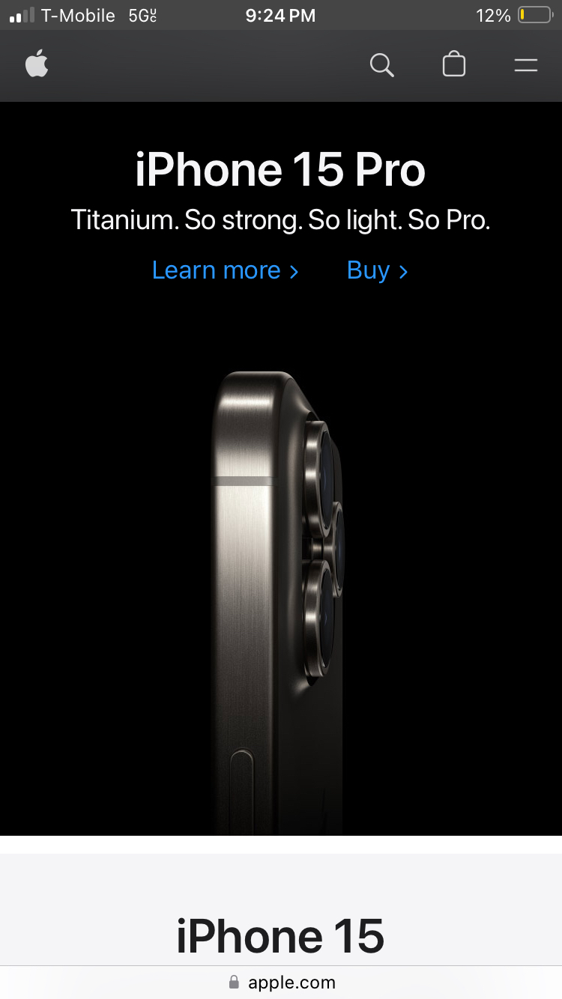
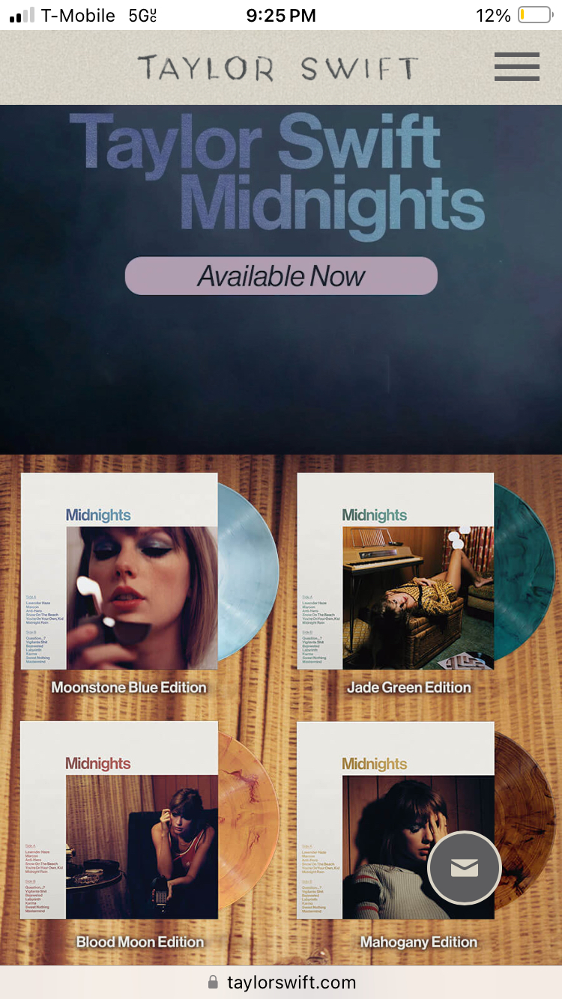

Proximity

Proximity is the distance between things on the page. This is a great example of this, because as you look at the page, the first thing you see is an iphone 15 Pro. But they make things fit on the page in such a manner, that you see just the words, of the next product down on their page. In this case, it is the Iphone 15. Just by doing this, the chance that you are going to scroll down to see the next product increases.
White Space and Clean Design
As a society, many times we view the simple and basic as luxurious. Like when you see the ads that have all white furniture in the room. The same goes for this website. They use the white space to make the product feel top of the line.
Repetition

Taylor Swift definetly uses repetion on her website. As you scroll throughout the screen, you see her new album, midnights, offered for sale about 3 times. You also find the links to buy some of her other albums listed several times as well.